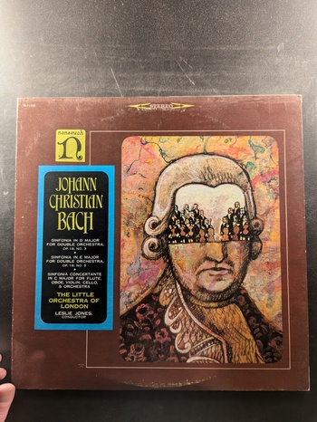

Divertimento No. 7 in D Major, K. 205 / Divertimento No. 10 in F Major, K. 247 / Six Country Dances in B-flat Major, K. 606
Wolfgang Amadeus Mozart
Musical Heritage Society MHS 609
Heroic Music for Organ, Brass and Percussion
E. Power Biggs, Organist / The New England Brass Ensemble
Columbia Masterworks MS 6354
Wieniawski: Violin Concerto No. 2 in D Minor / Kabalevsky: Violin Concerto / Bloch: Nigun from 'Baal Shem'
Pinchas Zukerman
Columbia Masterworks
Six Concerti Grossi, Op. VI
Antonio Vivaldi
MHS 3762
Plays Fritz Kreisler Album 3
Itzhak Perlman
Angel SZ-37650
Symphony in G Minor, Op. VI, No. 6 / Harpsichord Concerto in E-Flat Major, Op. VII, No. 5
Johann Christian Bach
The Musical Heritage Society Inc. MHS 3323
Trumpet and Organ
Maurice André, Marie-Claire Alain
The Musical Heritage Society Inc. MHS 1876
A Nonesuch Christmas
Various Artists
Nonesuch H-71228
Harpsichord Concertos
Dittersdorf, Werner, Albrechtsberger
Turnabout TV-S 34325
Sinfonia in D Major for Double Orchestra, Op. 18, No. 3 / Sinfonia in E Major for Double Orchestra, Op. 18, No. 5 / Sinfonia Concertante in C Major for Flute, Oboe, Violin, Cello, & Orchestra
Johann Christian Bach
Nonesuch H-71185
Two String Symphonies
Felix Mendelssohn
Musical Heritage Society MHS 4252
The Virtuose Viola d'Amore
Various Artists
Not visible Not visible
Paganini Violin Concertos Nos. 1 & 4
Henryk Szeryng
Philips
Concerto for Cello & Orchestra in B Minor, Op. 104
Antonin Dvorak
Westminster Gold WGM-8265
Overture to an English Opera / Symphony No. 63 in C Major ('La Roxelane') / Symphony No. 78 in C Minor
Joseph Haydn
Nonesuch H-71197
The Three Violin Concertos
Joseph Haydn
Musical Heritage Society MHS 1910
Plays and Conducts Mozart
Perahia
Columbia Masterworks M 35134
Baroque Brass
Empire Brass Quintet
Sine Qua Non SQN-SA 2014
Sinfonia IV 'La Clemenza di Scipione' Concert Arias
Johann Christian Bach
The Musical Heritage Society Inc. MHS 1846
Concerti Grossi, Opus 7
Francesco Geminiani
Philips PHC 9010
Airs & Duets
Henry Purcell
Nonesuch H-71343
Celebrated Christmas Concerti
I Solisti Veneti
Musical Heritage Society MHS 1234
Music for the Royal Fireworks and Three Concertos
Handel
Philips
Bassoon Concerti
Antonio Vivaldi
Musical Heritage Society MHS 4323
Aida: Excerpts
Verdi
Vox STPL 516.630
{kind=link}
{kind=link}
{kind=link}
{kind=link}
{kind=link}
{kind=link}
{kind=link}
{kind=link}
{kind=link}
{kind=link}
{kind=link}
{kind=link}
{kind=link}
{kind=link}
{kind=link}
{kind=link}
{kind=link}
{kind=link}
{kind=link}
{kind=link}
{kind=link}
{kind=link}
{kind=link}
{kind=link}
{kind=link}